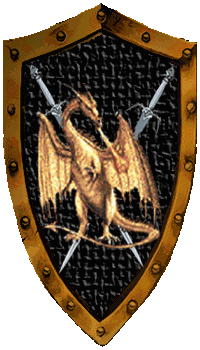

| Übersicht,
Off-Topic |
|
SIEG!!!
|
| Celebrimbor (RIP) |
Das Können eines Künstlers ist subjektiv. ;-) |
30.05.10 14:35

|
|
| Neilani (RIP) |
ganz ehrlich mich interessiert der ganze kram auch nicht. daher ist das hier mein erster und letzter post in dem thread. ;) |
30.05.10 14:49
|
|
Sìn Mortiarea
 |
ich wusste nichtmal, dass es diese Veranstaltung noch gibt |
30.05.10 15:15
 |
|
Elrohir v. glänzenen Wolfstern
|
hmpf - so schön es für den Einen oder Anderen auch gewesen sein mag
(meine Frau zum Beispiel :) - je nachdem, wer auf diese Musik steht)
Ich fand das ACDC-Konzert letzten Freitag in Hannover um Längen besser *gg*
(nur mal so nebenbei anmerken will, ohne den Anderen ihre Freude nehmen zu wollen)
Ich finds immer knuffig, wenn ich lese: Wir haben gewonnen! Deutschland hat den Sieg eingefahren! Wir sind die Besten! *gg*
Das klingt so ähnlich wie: Wir sind Papst! Wir sind Weltmeister! usw.
Immer wieder erstaunlich, wie eine Person oder eine Mannschaft ein Land im Wir-Gefühl bestätigen kann - ich finde, das sollten wir IG auch mal umsetzen.
WIR HABEN DEN 10000. BABYDRACHEN BESIEGT !!!
:D
God bless you all |
30.05.10 15:43
|
|
Zorra
 |
Ich habe mich bis jetzt als Papst wohl gefuehlt, und dann kommst du, und machst es mir kaputt. :( |
30.05.10 15:52
|
|
Kittin Silberfang
 |
Ich dachte, ich wäre Papst! Menschenskinner noche mo!
Der Hype ist etwas übertrieben, nichtsdestotrotz ist der Erfolg ein riesiger, den es anzuerkennen gilt und dem ein großer Teil auch Stefan Raab gehört :) |
30.05.10 15:58
|
|
| Heindal (RIP) |
naja ist euch eigentlich schonmal aufgefallen das der Song Satelite einen ähnlichen Rythmus hat wie "Fairy tale" ?
Aber seis drum, ich hoffe die Kleine lässt sich das nicht zu Kopf steigen und wird nicht vom Showbiz zerstört. Sie wäre nicht die Erste, die zuerst gehypt und dann fallengelassen wird. |
30.05.10 17:48
|
|
Amhlaidh Doireann
 |
Die traurige Wahrheit ist doch, dass sie nur Mittel zum Zweck war. Den, den sie wohl damit Ruhmreicher machen wollten nennt sich Stefan Raab. Bin mir eigentlich ziemlich sicher, dass ihnen Lena selbst egal war. Jetzt ist Pro 7ns Entertainer nochmal um längen besser. Raab kann eben alles. ;) |
30.05.10 17:57
|
|
Amhlaidh Doireann
|
*wünscht sich eine Edit Funktion, wie so viele.* ^^ |
30.05.10 17:57
|
|
| Dorothea von Georgia (RIP) |
Ich mag die Musik die sie macht und freue mich das sie gewonnen hat. und stefan raab macht wenigstens aus guten dingen geld und nicht so wie bohlen der aus scheiße geld macht. *find*
aber ich hoffe nur das es nicht in berlin stadt findet nächstes jahr. diese ganzen turisten dann in berlin oh mein gott ich werde jeden tag auf arbeit aufs neue ausrasten müssen. also bitte in hannover machen oder so ^^ |
31.05.10 0:40
|
|
| Eran von Aibheisgârd (RIP) |
Um ehrlich zu sein, für mich hört sich dieses Lied an wie ne Aufnahme aus nem Proberaum einer Newcomer-Band. Hab´s mir auf Youtube angehört und dachte erst ich hät nen Cover erwischt...
Aber is ja schon mal nen guter Anfang. Jetzt müssen wir nur noch die FußballWM gewinnen. *g |
31.05.10 6:31
|
|
| Iga Pelogran (RIP) |
Schattentanz Du hattest dich verzählt... 9 mal gabs 12 Points (von Dänemark, Estland, Lettland, Spanien, Schweiz, Finnland, Norwegen, Schweden und Slowakei!) Dann noch 5x 10 Points und nen paar mal 8. Keine Puntis haben wir von Armenien, Weißrussland, Georgien, Israel und Malta, Die Griechen haben uns ja immerhin 2 gegeben (entspricht ca. 16% ergo bekommen die jetzt auch kein 20 Milliarden sondern nur noch 3,5...(16% halt...)
Für alle Statistikfreaks hierdie Auflistung aller Votes im Kreuzdiagramm:
http://www.eurovision.tv/event/scoreboard?event=1493
Nachem Fussball und in den Pausen vom Boxen lief ja nix anderes... ;-) Ist nämlich eigentlich gar nisch meine Musik... |
31.05.10 7:49
|
|
Udra Dronn
 |
Ich meine das eine Zuschauerin im Fernsehen gesagt hatte das sie sich freut das wir den Euro dingsda mit Lena gewonnen haben weil WM werden wir sowieso nicht mehr. |
31.05.10 10:01
|
|
| Hadrielia Dornenherz (RIP) |
bei der WM , kommen wir nicht weiter als bis zur Vorrunde.Weil Jogi eine Gurkenmannschaft zusammengestellt hat *g* ALso da der Zuschauerin recht geb. |
31.05.10 10:05
|
|
| Loewen von Aldarion (RIP) |
ich muß schon mal fragen, wo ist diese dame noch bodenständig-> egal,ich freue mich schon auf fußball, da kann es deutschland mit leistung schaffen |
31.05.10 12:32
|
|
Nemo van Delving
 |
Keine Ahnung was ihr habt. War ne super geile Show mit tollen Liedern. Lena war für mich in den Top 5 - da gabs aber für mich noch einige andere, die super gesungen haben bzw. eine tolle Performance abgeliefert haben.. (Belgien, Israel, Aserbaidschan, Frankreich, Griechenland z.B.)
Das geilste an der ganzen Show war für mich der Flashmob Tanz in so ziemlich jeder Hauptstadt Europas. Ich meine, in dem Moment war ganz Europa vereint - was soll daran scheiße sein?
Wer Eurovision scheiße findet soll einfach die Fresse halten und gut. Eure Meinung interessiert keinen. |
31.05.10 17:51
|
|
Sìn Mortiarea
|
Schonmal was von Meinungsfreiheit gehört?
Umgekehrt könnte man ja auch sagen, die Meinung der Fans dieser Eurovisionsversanstaltung interessiert keinen.
Ich finds völlig okay und gerechtfertigt, wenn beide Seiten ihren Senf dazugeben. |
31.05.10 18:29
|
|
| Hadrielia Dornenherz (RIP) |
Der Tanz in den Europäischen Ländern, war genial gemacht, "Hut ab!" und sehr gut organisiert gewesen. |
31.05.10 21:33
|
|
Nemo van Delving
|
Sorry, aber hier geht es um die Eurovision. Was interessieren hier Meinungen von Leuten, die Eurovision nicht interessiert? Das ist sinnfrei und bringt absolut nichts. |
31.05.10 21:46
|
|
| Anarwen McMulenberc (RIP) |
Ebenso sinnfrei ist es, gleich loszumaulen ;)
Also mal im Ernst, ich habe deinen Post als den ersten wirklich "negativen" Post angesehen, weil du die Leute so dermasen angehst, das ist schon nicht mehr schön :(
|
01.06.10 7:44
|
|
Nemo van Delving
|
Okay, der Tonfall war nicht korrekt - muss ich zugeben. Man sollte nicht schreiben, wenn man sauer ist :-) |
01.06.10 18:14
|
|
Übersicht,
Off-Topic
|